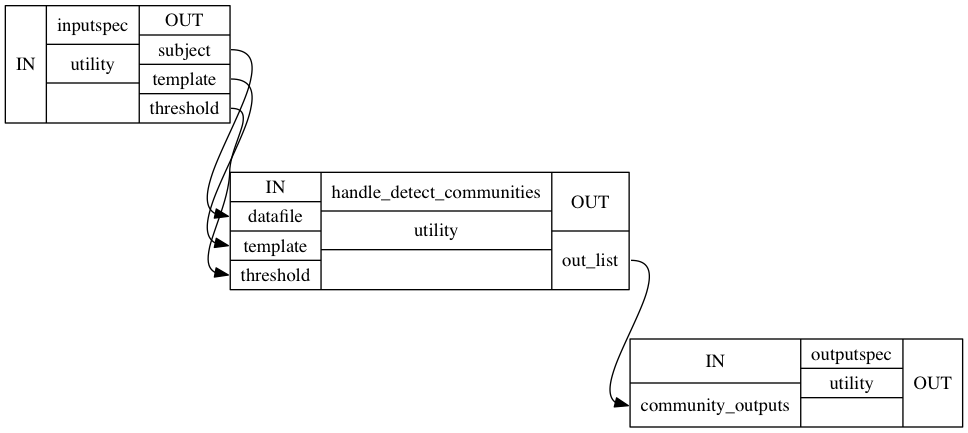
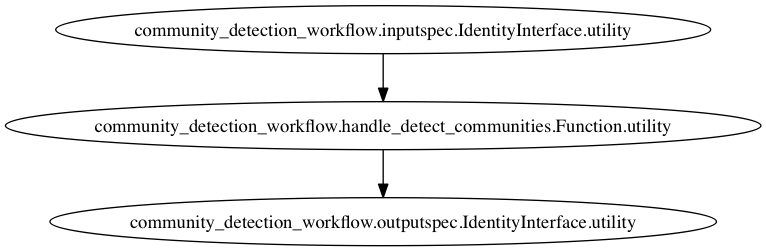

first-week-recap
Posted on Fri 29 May 2015 in GSoC
this is a head
subsection
anotther one
like this emphasis strong
 - foot can be everytwhere [1]
import numpy as np
import networkx as nx
import nipype.pipeline.engine as pe
import nipype.interfaces.utility as util
import cdutils
from CPAC.network_centrality.utils import calc_blocksize
from CPAC.cwas.subdist import norm_cols
from CPAC.network_centrality.thresh_and_sum import *
import louvain
def create_community_workflow(wf_name="community_detection_workflow", allocated_memory = None):
# new community wokflow instance
wf = pe.Workflow(name=wf_name)
# populate inputspec node
inputspec = pe.Node(util.IdentityInterface(fields=['subject', 'template', 'threshold']), name='inputspec')
# main entry point instance
handle_detect_communities = pe.Node(util.Function(input_names = ['datafile', 'template', 'threshold', 'allocated_memory'], output_names = ['out_list'], function = detect_communities), name='handle_detect_communities')
# connect inputspec node with main function node
wf.connect(inputspec, 'subject', handle_detect_communities, 'datafile')
wf.connect(inputspec, 'template', handle_detect_communities, "template")
wf.connect(inputspec, 'threshold', handle_detect_communities, 'threshold')
# specify allocated memory from workflow input to function node
handle_detect_communities.inputs.allocated_memory = allocated_memory
# populate outputspec noode
outputspec = pe.Node(util.IdentityInterface(fields= ['community_outputs', 'threshold_matrix','correlation_matrix','graph_outputs']), name = 'outputspec')
# connect outputspec node with main function node
wf.connect(handle_detect_communities, 'out_list', outputspec, 'community_outputs')
# return workflow
return wf
def detect_communities(datafile, template, threshold, allocated_memory):
out_list = []
ts, aff, mask, t_type, scans = cdutils.load(datafile, template)
block_size = calc_blocksize(ts, memory_allocated=allocated_memory, include_full_matrix=True)
ts_normalized = norm_cols(ts.T)
# build correlation matrix and binarize to get adjaceny matrix
corr_matrix = build_correlation_matrix(ts_normalized, threshold, block_size)
# buold graph from adjacendy matrix
G = build_graph(corr_matrix)
partition = louvain.best_partition(G)
print float(len(set(partition.values())))
return G, partition
def build_correlation_matrix(ts_normd,
thresh,
block_size):
# Init variables
out_list = []
nvoxs = ts_normd.shape[1]
r_matrix = np.zeros((nvoxs,nvoxs), dtype=ts_normd.dtype)
# Prepare to loop through and calculate correlation matrix
n = 0
m = block_size
block_no = 1
# Run as long as our last row index is <= nvoxs
while m <= nvoxs:
# First, compute block of correlation matrix
print 'running block %d: rows %d thru %d' % (block_no, n, m)
rmat_block = np.dot(ts_normd[:,n:m].T, ts_normd)
# append global corr. matrix
r_matrix[n:m] = rmat_block
# Delete block of corr matrix and increment indices
del rmat_block
# Move next block start point up to last block finish point
n = m
# If we finished at nvoxs last time, break the loop
if n == nvoxs:
break
# Else, if our next block runs over nvoxs, limit it to nvoxs
elif (m+block_size) > nvoxs:
m = nvoxs
# Else, just increment end of next block by block_size
else:
m += block_size
# Increment block number
block_no += 1
#call out to cython code to binarize correlation matrix
func_name = "thresh_binarize_float"
func_handle = globals()[func_name]
func_handle(r_matrix, thresh)
return r_matrix
def build_graph(adjacenyMatrix):
G = nx.from_numpy_matrix(adjacenyMatrix)
return G
| [1] | so geht das |